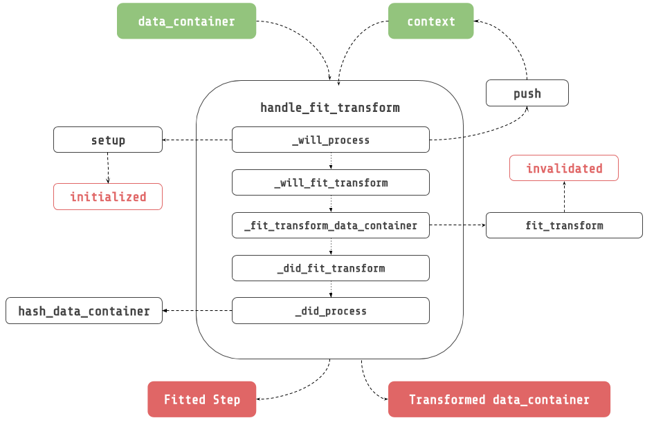

Handler Methods¶
Handler methods structure how to handle the flow of data from one step to another. Steps can override this algorithm inherited from BaseStep to change the behavior of the flow of data. It makes it possible to build really powerful steps that can edit and change the execution flow, and in multiple dimensions. Here is the detailed reference.

The following handle methods are available for each step:
handle_fit_transform¶
_will_process(data_container, context): Apply side effects before any step method.
_will_fit_transform(data_container, context): Apply side effects before fit_transform
_fit_transform_data_container(data_container, context): Fit transform data container.
_did_fit_transform(data_container, context): Apply side effects after fit_transform.
_did_process(data_container, context): Apply side effects after any step method.
handle_fit¶
_will_process(data_container, context): Apply side effects before any step method.
_will_fit(data_container, context): Apply side effects before fit.
_fit_data_container(data_container, context): Fit data container.
_did_fit(data_container, context): Apply side effects after fit.
_did_process(data_container, context): Apply side effects after any step method.
handle_transform¶
_will_process(data_container, context): Apply side effects before any step method
_will_transform(data_container, context): Apply side effects before transform.
_transform_data_container(data_container, context): Fit transform data container.
_did_transform(data_container, context): Apply side effects after transform.
_did_process(data_container, context): Apply side effects after any step method.
When to use handler methods ?¶
When you need to apply side effects, or change the execution flow:
Edit the DataContainer
Call a method on a step
Mini-Batching (see MiniBatchSequentialPipeline)
Caching (see neuraxle.checkpoint package)
etc.
HandleOnlyMixin¶
Inherit from HandleOnlyMixin, to only implement the handler methods, and forbid implementing fit or transform or fit_transform without the handles.
ForceHandleMixin¶
Inherit from ForceHandleMixin, to automatically calls handle methods in the transform, fit, and fit_transform methods. A step might have to be forced to pass through the lifecycle methods. This is true for all of the steps that can be called from the outside world. For example, you might want to transform all of the data inside the data container.
ForceHandleOnlyMixin¶
Inherit from ForceHandleOnlyMixin to require the implementation of handler methods, AND automatically call handle methods in the transform, fit, and fit_transform methods.
Examples¶
ForEach¶
Consider a wrapper step that would loop through each data input, and transform each item with the wrapped step. One could create such a step by inheriting from MetaStepMixin, and implementing each of the necessary handler methods : _transform_data_container, _fit_data_container, fit_transform_data_container.
Here is the implementation of the _transform_data_container for the ForEach step
[1]:
from neuraxle.base import BaseStep, ExecutionContext, ForceHandleMixin, HandleOnlyMixin, TruncableSteps
import numpy as np
from neuraxle.data_container import DataContainer
def _transform_data_container(self, data_container: DataContainer, context: ExecutionContext) -> DataContainer:
output_data_container: ListDataContainer = ListDataContainer.empty()
for current_id, di, eo in data_container:
output: DataContainer = self.wrapped.handle_transform(
DataContainer(summary_id=data_container.summary_id, current_ids=None, data_inputs=di, expected_outputs=eo),
context
)
output_data_container.append(current_id, output.data_inputs, output.expected_outputs)
output_data_container.summary_id = data_container.summary_id
return output_data_container
ToNumpy¶
[2]:
from neuraxle.base import BaseStep, DataContainer, ExecutionContext, ForceHandleMixin, HandleOnlyMixin, TruncableSteps
import numpy as np
from neuraxle.data_container import DataContainer
class ToNumpy(ForceHandleMixin, BaseStep):
"""
Convert data inputs, and expected outputs to a numpy array.
"""
def _will_process(self, data_container: DataContainer, context: ExecutionContext) -> (DataContainer, ExecutionContext):
return data_container.to_numpy(), context
Transform Expected Outputs¶
Consider a wrapper step that would transform the expected outputs instead of the data inputs.
Create such a step in 4 easy steps (toudoum tish) :
Create a step that inherits from `ForceHandleOnlyMixin <https://www.neuraxle.org/stable/api/neuraxle.base.html#neuraxle.base.ForceHandleOnlyMixin>`__, and `MetaStepMixin <https://www.neuraxle.org/stable/api/neuraxle.base.html#neuraxle.base.MetaStepMixin>`__.
[3]:
from neuraxle.base import ExecutionContext, BaseStep, MetaStepMixin, ForceHandleOnlyMixin
from neuraxle.data_container import DataContainer
from neuraxle.steps.numpy import MultiplyByN
class OutputTransformerWrapper(ForceHandleOnlyMixin, MetaStepMixin, BaseStep):
def __init__(self, wrapped, cache_folder_when_no_handle=None):
BaseStep.__init__(self)
MetaStepMixin.__init__(self, wrapped)
ForceHandleOnlyMixin.__init__(self, cache_folder_when_no_handle)
Implement _transform_data_container:
Pass expected outputs to the wrapped step handle_transform method. Update the data container expected outputs with the outputs.
[4]:
def _transform_data_container(self, data_container: DataContainer, context: ExecutionContext) -> DataContainer:
new_expected_outputs_data_container = self.wrapped.handle_transform(
DataContainer(
data_inputs=data_container.expected_outputs,
current_ids=data_container.current_ids,
expected_outputs=None
),
context
)
data_container.set_expected_outputs(new_expected_outputs_data_container.data_inputs)
return data_container
Implement _fit_data_container:
Pass expected outputs to the wrapped step handle_fit method. Update the data container expected outputs with the outputs.
[5]:
def _fit_data_container(self, data_container: DataContainer, context: ExecutionContext) -> (BaseStep, DataContainer):
self.wrapped = self.wrapped.handle_fit(
DataContainer(
data_inputs=data_container.expected_outputs,
current_ids=data_container.current_ids,
expected_outputs=None),
context
)
return self, data_container
Implement _fit_transform_data_container:
Pass expected outputs to the wrapped step handle_fit_transform method. Update the data container expected outputs with the outputs.
[6]:
def _fit_transform_data_container(self, data_container: DataContainer, context: ExecutionContext) -> (BaseStep, DataContainer):
self.wrapped, new_expected_outputs_data_container = self.wrapped.handle_fit_transform(
DataContainer(
data_inputs=data_container.expected_outputs,
current_ids=data_container.current_ids,
expected_outputs=None
),
context
)
data_container.set_expected_outputs(new_expected_outputs_data_container.data_inputs)
return self, data_container
The results looks like this:
[7]:
from neuraxle.base import ExecutionContext, BaseStep, MetaStepMixin, ForceHandleOnlyMixin
from neuraxle.data_container import DataContainer
class OutputTransformerWrapper(ForceHandleOnlyMixin, MetaStepMixin, BaseStep):
def __init__(self, wrapped, cache_folder_when_no_handle=None):
BaseStep.__init__(self)
MetaStepMixin.__init__(self, wrapped)
ForceHandleOnlyMixin.__init__(self, cache_folder_when_no_handle)
def _transform_data_container(self, data_container: DataContainer, context: ExecutionContext) -> DataContainer:
new_expected_outputs_data_container = self.wrapped.handle_transform(
DataContainer(data_inputs=data_container.expected_outputs, current_ids=data_container.current_ids,
expected_outputs=None),
context
)
data_container.set_expected_outputs(new_expected_outputs_data_container.data_inputs)
return data_container
def _fit_data_container(self, data_container: DataContainer, context: ExecutionContext) -> (BaseStep, DataContainer):
self.wrapped = self.wrapped.handle_fit(
DataContainer(data_inputs=data_container.expected_outputs, current_ids=data_container.current_ids,
expected_outputs=None),
context
)
return self, data_container
def _fit_transform_data_container(self, data_container: DataContainer, context: ExecutionContext) -> (BaseStep, DataContainer):
self.wrapped, new_expected_outputs_data_container = self.wrapped.handle_fit_transform(
DataContainer(data_inputs=data_container.expected_outputs, current_ids=data_container.current_ids, expected_outputs=None),
context
)
data_container.set_expected_outputs(new_expected_outputs_data_container.data_inputs)
return self, data_container
[8]:
data_inputs = np.array([0, 1])
expected_outputs = np.array([1, 2])
print('data_inputs before: {}'.format(data_inputs))
print('expected_outputs before: {}'.format(expected_outputs))
step = OutputTransformerWrapper(MultiplyByN(2))
output_data_container = step.handle_transform(
DataContainer(data_inputs=data_inputs, expected_outputs=expected_outputs),
ExecutionContext()
)
print('data_inputs after: {}'.format(output_data_container.data_inputs))
print('expected_outputs after: {}'.format(output_data_container.expected_outputs))
data_inputs before: [0 1]
expected_outputs before: [1 2]
data_inputs after: [0 1]
expected_outputs after: [2 4]
Expand The DataContainer¶
Consider a typical step that expands the dimension of all the data inside the data container. ExpandDim sends the expanded data container to the wrapped step. ExpandDim returns the transformed expanded dim reduced to its original shape.
This can be easily done in Neuraxle:
Create a step that inherits from MetaStepMixin, and BaseStep.
[9]:
from neuraxle.base import BaseStep, MetaStepMixin, DataContainer, ExecutionContext, Identity
from neuraxle.data_container import ExpandedDataContainer
import numpy as np
class ExpandDim(MetaStepMixin, BaseStep):
def __init__(self, wrapped: BaseStep):
BaseStep.__init__(self)
MetaStepMixin.__init__(self, wrapped)
Implement the _will_process lifecycle method to expand the data inside the data container.
[10]:
def _will_process(self, data_container, context):
data_container, context = BaseStep._will_process(self, data_container, context)
return ExpandedDataContainer.create_from(data_container), context
Implement the _did_process lifecycle method to reduce the dimension of the data inside the data container.
[11]:
def _did_process(self, data_container, context):
data_container = BaseStep._did_process(self, data_container, context)
return data_container.reduce_dim()
The result looks like this:
[12]:
class ExpandDim(MetaStepMixin, BaseStep):
def __init__(self, wrapped: BaseStep):
BaseStep.__init__(self)
MetaStepMixin.__init__(self, wrapped)
def _will_process(self, data_container, context):
data_container, context = BaseStep._will_process(self, data_container, context)
return ExpandedDataContainer.create_from(data_container), context
def _did_process(self, data_container, context):
data_container = BaseStep._did_process(self, data_container, context)
return data_container.reduce_dim()
Before testing the step, let’s define a quick utility class to print data for this example, and the ones after :
[13]:
class PrintData(Identity):
def __init__(self, message):
super().__init__()
self.message = message
def _did_process(self, data_container, context):
print('data_inputs {}: {}'.format(self.message, data_container.data_inputs))
print('expected_outputs {}: {}'.format(self.message, data_container.expected_outputs))
print('\n')
return data_container
Now let’s transform our step :
[14]:
data_inputs = [0, 1]
expected_outputs = [1, 2]
print('data_inputs before: {}'.format(data_inputs))
print('expected_outputs before: {}'.format(expected_outputs))
step = ExpandDim(PrintData('inside'))
output_data_container = step.handle_transform(
DataContainer(data_inputs=data_inputs, expected_outputs=expected_outputs),
ExecutionContext()
)
data_inputs before: [0, 1]
expected_outputs before: [1, 2]
data_inputs inside: [[0, 1]]
expected_outputs inside: [[1, 2]]
Reversible Pipeline¶
Consider a step that can be reversible. For example, you might want to unnormalize predictions. This can be easily done with a step that inherits from TruncableSteps, and HandleOnlyMixin.
Create a step that inherits from HandleOnlyMixin, and TruncableSteps. Initialize TruncableSteps with a preprocessing, and a postprocessing step.
[15]:
class ReversiblePreprocessingWrapper(HandleOnlyMixin, TruncableSteps):
def __init__(self, preprocessing_step, postprocessing_step):
HandleOnlyMixin.__init__(self)
TruncableSteps.__init__(self, [
("preprocessing_step", preprocessing_step),
("postprocessing_step", postprocessing_step)
])
Implement _fit_data_container:
[16]:
def _fit_data_container(self, data_container: DataContainer, context: ExecutionContext) -> 'ReversiblePreprocessingWrapper':
self["preprocessing_step"], data_container = \
self["preprocessing_step"].handle_fit_transform(data_container, context)
self["postprocessing_step"] = \
self["postprocessing_step"].handle_fit(data_container, context)
return self
Implement _transform_data_container:
[17]:
def _transform_data_container(self, data_container: DataContainer, context: ExecutionContext) -> DataContainer:
data_container = self["preprocessing_step"].handle_transform(
data_container,
context.push(self["preprocessing_step"])
)
data_container = self["postprocessing_step"].handle_transform(
data_container,
context.push(self["postprocessing_step"])
)
data_container = self["preprocessing_step"].handle_inverse_transform(
data_container,
context.push(self["preprocessing_step"])
)
return data_container
Implement _fit_transform_data_container:
[18]:
def _fit_transform_data_container(self, data_container: DataContainer, context: ExecutionContext) -> ('BaseStep', DataContainer):
self["preprocessing_step"], data_container = self["preprocessing_step"].handle_fit_transform(
data_container,
context.push(self["preprocessing_step"])
)
self["postprocessing_step"], data_container = self["postprocessing_step"].handle_fit_transform(
data_container,
context.push(self["postprocessing_step"])
)
data_container = self["preprocessing_step"].handle_inverse_transform(
data_container,
context.push(self["preprocessing_step"])
)
return self, data_container
The results look like this:
[19]:
from neuraxle.pipeline import Pipeline
from neuraxle.steps.numpy import MultiplyByN
class ReversiblePreprocessingWrapper(HandleOnlyMixin, TruncableSteps):
def __init__(self, preprocessing_step, postprocessing_step):
HandleOnlyMixin.__init__(self)
TruncableSteps.__init__(self, [
("preprocessing_step", preprocessing_step),
("postprocessing_step", postprocessing_step)
])
def _fit_transform_data_container(self, data_container: DataContainer, context: ExecutionContext) -> ('BaseStep', DataContainer):
self["preprocessing_step"], data_container = self["preprocessing_step"].handle_fit_transform(
data_container,
context.push(self["preprocessing_step"])
)
self["postprocessing_step"], data_container = self["postprocessing_step"].handle_fit_transform(
data_container,
context.push(self["postprocessing_step"])
)
data_container = self["preprocessing_step"].handle_inverse_transform(
data_container,
context.push(self["preprocessing_step"])
)
return self, data_container
def _transform_data_container(self, data_container: DataContainer, context: ExecutionContext) -> DataContainer:
data_container = self["preprocessing_step"].handle_transform(
data_container,
context.push(self["preprocessing_step"])
)
data_container = self["postprocessing_step"].handle_transform(
data_container,
context.push(self["postprocessing_step"])
)
data_container = self["preprocessing_step"].handle_inverse_transform(
data_container,
context.push(self["preprocessing_step"])
)
return data_container
def _fit_data_container(self, data_container: DataContainer, context: ExecutionContext) -> 'ReversiblePreprocessingWrapper':
self["preprocessing_step"], data_container = \
self["preprocessing_step"].handle_fit_transform(data_container, context)
self["postprocessing_step"] = \
self["postprocessing_step"].handle_fit(data_container, context)
return self
data_inputs = np.array([1, 2])
p = Pipeline([
PrintData('before reversible preprocessing wrapper'),
ReversiblePreprocessingWrapper(
preprocessing_step=Pipeline([
MultiplyByN(2),
PrintData('after preprocessing')
]),
postprocessing_step=Pipeline([
MultiplyByN(3),
PrintData('after postprocessing')
])
)
])
outputs = p.transform(data_inputs)
print('data inputs after inverse transform preprocessing: {}'.format(outputs))
data_inputs before reversible preprocessing wrapper: [1 2]
expected_outputs before reversible preprocessing wrapper: [None, None]
data_inputs after preprocessing: [2 4]
expected_outputs after preprocessing: [None, None]
data_inputs after postprocessing: [ 6 12]
expected_outputs after postprocessing: [None, None]
data_inputs after preprocessing: [ 6 12]
expected_outputs after preprocessing: [None, None]
data inputs after inverse transform preprocessing: [3. 6.]